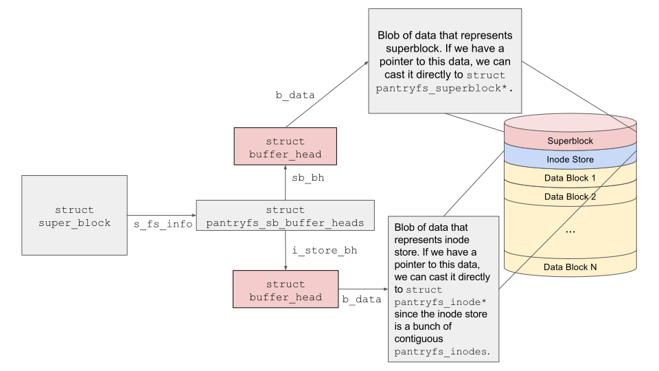

virtual file system

A new virtual file system called 'PantryFS' was implemented and added to the Linux Kernel called 'PantryFS'. The following diagram describes the various data structures that are used for the implementation of the file system and how these data structures interact with each other:
The file system has the following features:
The project was undertaken as a part of the course 'Operating Systems' offered at Columbia University. The project was implemented in C language and was done in a team of 2 members comprising of Jay Karp and Umang Raj.
The GitHub repository of the project cannot be made public, owing to the course policy. For more details, please send Umang Raj an email at ur2136@columbia.edu.
References: Image taken from assignment specification provided by Professor Jae Wo Lee as a part of the course COMS-4118 (Operating Systems).